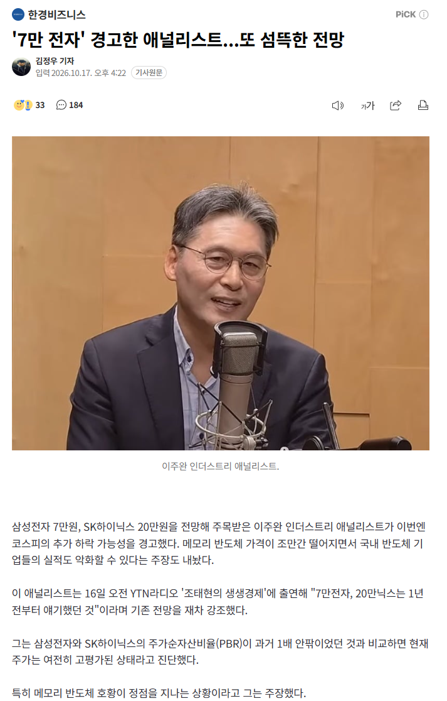

https://n.news.naver.com/article/050/0000112060

https://n.news.naver.com/article/050/0000112060

서울 강남집값 10억원으로 떨어진다고?
심술이 얼마나 났으면
어그로지
LS증권 : 그럼 숏 쳐
의도가 뭐든 국민들 대부분 대깨롱 외치는 상황에서 깡 좋네
개드립에서 주가떨어진다는 말 나오면 욕이 왜이렇게 많은가 했는데
사놓은 개붕이들이 엄청 많구나 ㄷㄷ
주식경력 많은사람들은 이미 손털었음 개미들만 홀딩중 ㅋㅋ
냉철하게 봐야지않나? 더 오를 건덕지없어보이는데.
그래도 7만은 아니지
메모리 숏티지가 언제까지냐가 문제인건데... 이거 점점 뒤로 밀리는 중임.
삼성,하닉, 마이크론의 공장 증설 및 CXMT 때문에 일반 D램은 2028년 이후 어느 정도 가격 안정화가 되겠지만 공급과잉을 말하기에는 2032년 이후가 될 예정이고,
HBM은 계속 숏티지가 날 예정임. 이거 언제 풀릴지는 미정. ASML이 중간에 병목인데 이게 ASML이 공장 늘린다고 되는게 아니라 광학장비 등이 계속 걸림돌이 됨. 걔네 입장에서는 굳이 공장 증설해봤자 큰 돈도 못벌고 얼마나 갈지도 알 수 없는 상황이라...
그리고 7만 전자면 PER이 1도 안된다. 말이 되냐 ㅋㅋㅋ 2027년에 벌어오는 돈이 500조가 넘는데 주가가 500조라니.
하 하닉 230에 물려 있다..
40 / 350이딴 불가능한 병신전망내놓는 증권사 새끼들보단 소신있네
고장닌시계도 히루에 두번은 맞는데 이양반은 아프리카 기우제스타일로 주구장칭 밀하면서 아직까지 맞질 않네
뉴노멀이라는걸 못받아들이실듯
애널들 말은 논리를 봐야지
목표주가는 별 의미 없음
얘 논리 개작살 났는데 왜 아직도 뉴스에 나오는지 모르겠음.
주요논리는 전년도 대비 D램 판매량은 줄었다. 의도적으로 감산해서 금액을 올린거다. 이거였는데 거의 음모론 수준임.
팩트 1. 전년 대비 일반 D램 판매량은 줄은거 맞음. 금액이 올라간 것도 맞음.
팩트 2. 웨이퍼 전체생산량은 늘어남. 재고물량도 없음.
팩트 3. 근데 D램 판매량이 왜 줄었냐? HBM 생산량에 소모된 웨이퍼량이 어마무시해서 그럼. 일반적으로 D램의 3배수 잡음.
결론 : 전체 웨이퍼 생산량은 늘어났으나 HBM 생산에 소모 된 물량 때문에 일반 D램 생산량은 줄어듬.
근데 그걸 오도해서 D램 생산량을 줄여서 일부로 단가를 높인거라고 말하는게 맞냐?
그 문제가 아니잔아.
D램과 SSD를 중국이 만들고 점유율이 각각 10%와 14%를 넘어 빠르게 치솟고 있잔아.
심지어 일반28nm 이하는 62%가 중국산이다.
IC 설계분야도 중국이 45%먹었음.
반도체시장 전체로 따지면 중국이 30%이고 빠르게 상승하고 있음.
중국의 반도체 분야 자급자족이 완성되어 버렸고 심지어 중국 반도체는 연구개발비를 국가가 무한대로 밀어주고 있어 미래도 밝음.
전자부품 수리할때 부품들 전부 알리익스프레스에서 구할 수 있잔아. 왜겠어..전부 중국에서 생산되니깐 알리에 있는거지.
저정도 자신감이면 집이고 차고 다 팔아서 인버스 넣은 거 인증해야 되는거 아니냐 ㅋㅋ
1년 전부터 얘기했다는데 주가 그래프 보면 뭐
"지금은 캐파(생산 능력)는 넉넉하다"며 "공장이 한 20~30% 놀고 있다"고 주장했다.
?
1년전부터면 개그맨이시네